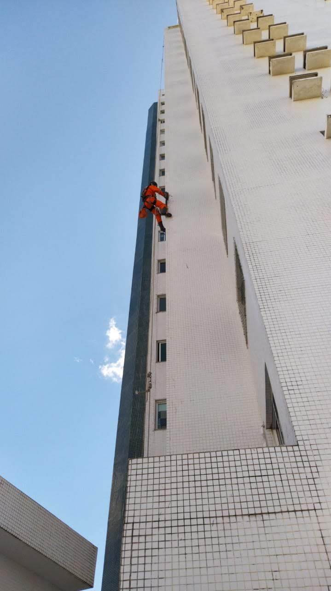
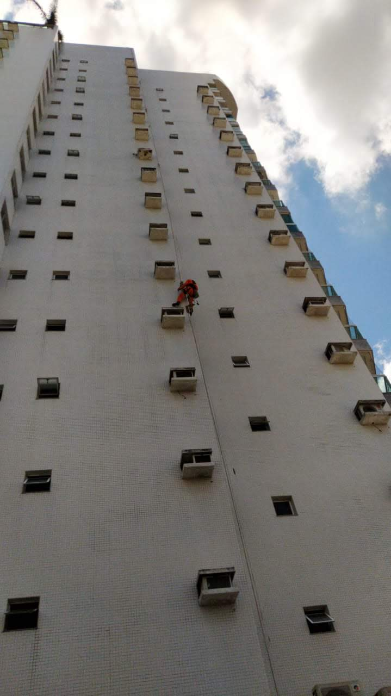
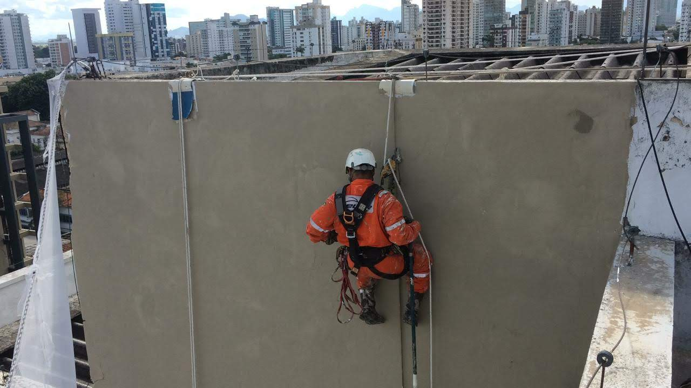
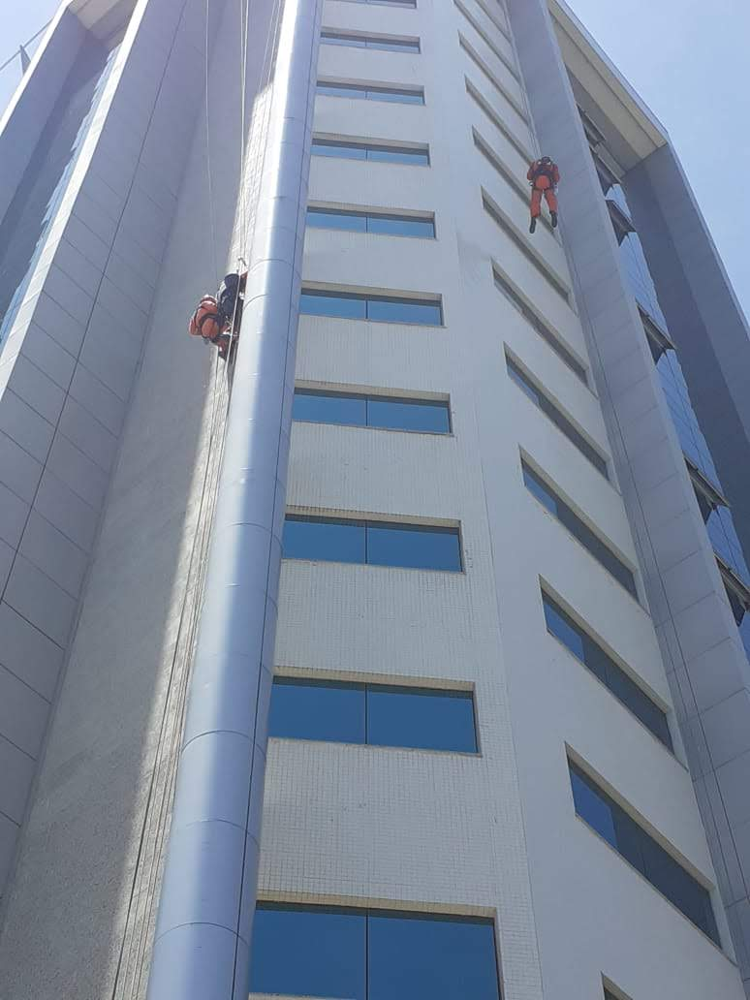
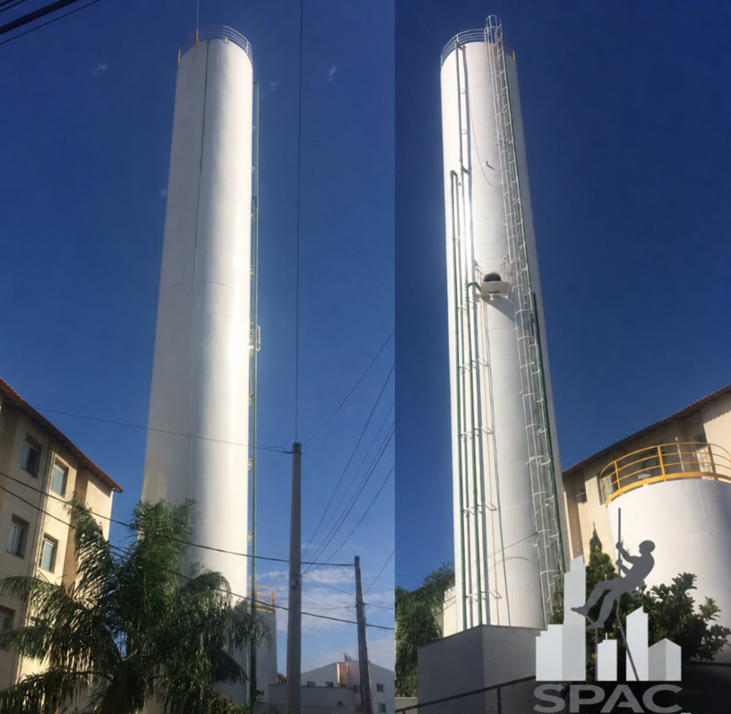
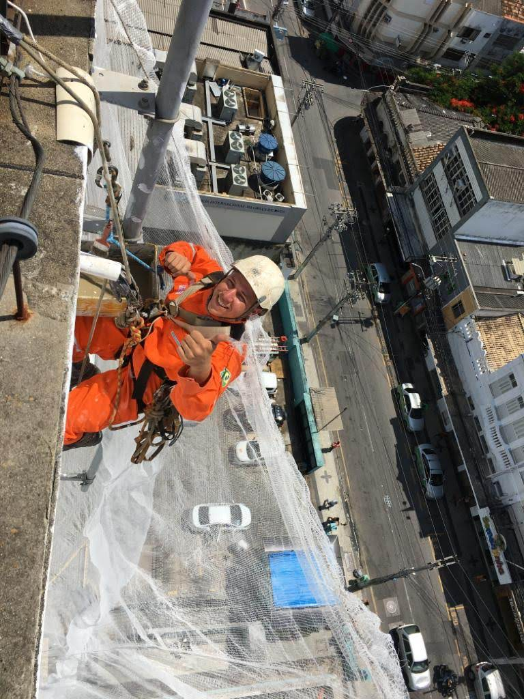
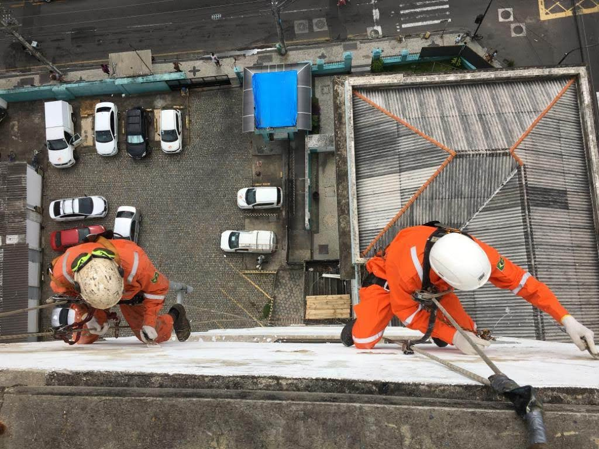
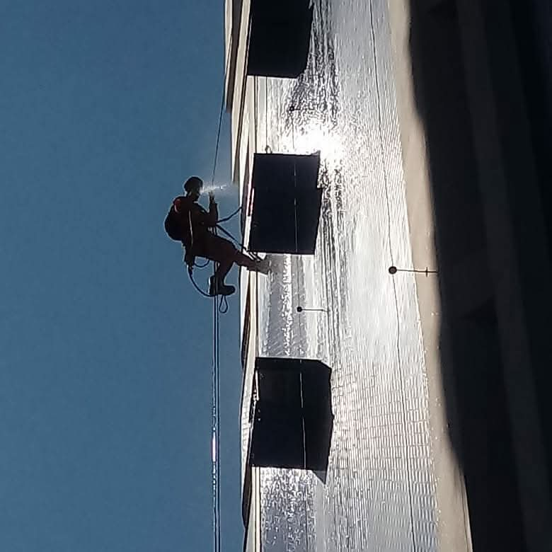
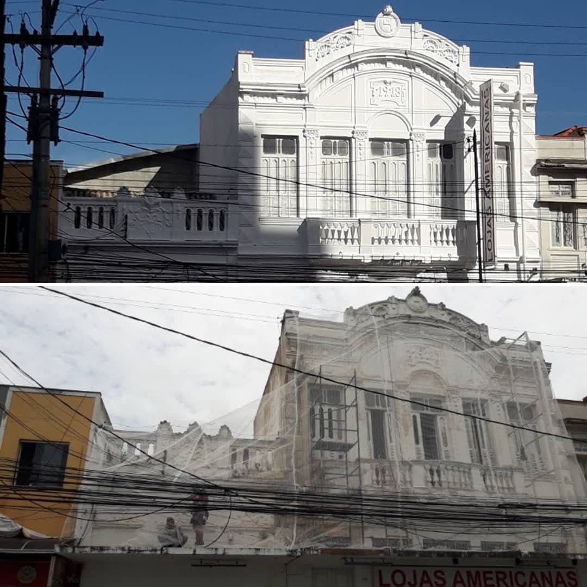
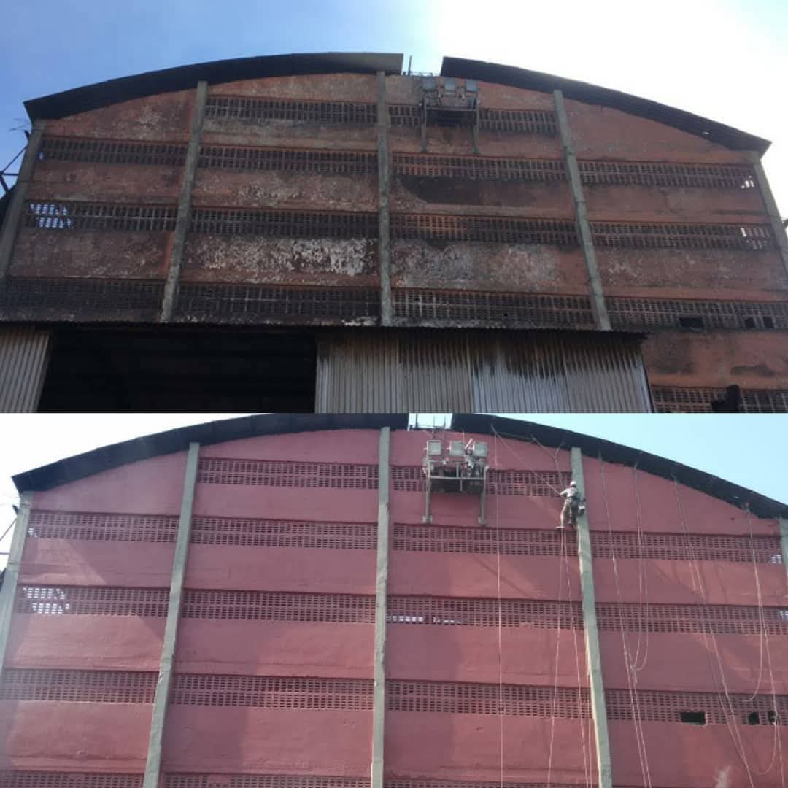

Especialistas em acesso por cordas, pintura predial, reparo em fachadas e inspeção de pastilhas.
Solicitar orçamentoProfissionalismo em cada detalhe
A SPAC Soluções Prediais atua com serviços técnicos em fachadas, manutenção predial e acesso por cordas, oferecendo soluções seguras, eficientes e modernas.
Soluções completas para fachadas e estruturas prediais
Execução de pintura em fachadas com acabamento profissional e segurança.
Serviços realizados com técnicas de acesso por cordas e equipe especializada.
Correções, recuperação e manutenção de áreas externas de edificações.
Verificação técnica de revestimentos, identificação de falhas e riscos.
Instalação segura e planejada de estruturas técnicas em fachadas prediais.
Limpeza técnica especializada para maior eficiência e desempenho dos painéis solares.
Instalação de sistemas certificados de proteção coletiva e individual para trabalhos em altura.
Pintura especializada em reservatórios elevados com produtos atóxicos e resistentes à imersão.
Serviços de solda, corte e fabricação metálica executados em altura com segurança e precisão técnica.
Trabalhamos com foco em planejamento, prevenção de riscos, produtividade e excelência.
Arraste para o lado e conheça nossos vídeos
No celular, arraste para o lado para assistir os vídeos.
Alguns registros reais das atividades da SPAC










Fale com a SPAC Soluções Prediais e receba atendimento personalizado.
Chamar no WhatsAppFaça parte do time SPAC. Envie seu currículo e venha crescer com a gente.
A pintura predial é fundamental para a proteção, conservação e valorização do imóvel. Além de renovar a estética da edificação, a pintura funciona como uma camada de proteção contra sol, chuva, umidade e desgaste natural do tempo.
Uma pintura bem executada transmite modernidade, cuidado e credibilidade, deixando o ambiente mais agradável e sofisticado. Também contribui para a preservação das superfícies, prevenindo rachaduras, infiltrações e deteriorações estruturais.
Manter a pintura em dia valoriza o patrimônio, melhora a aparência do prédio e demonstra compromisso com qualidade, segurança e conservação. Seja em áreas internas ou externas, investir em pintura predial é investir na durabilidade e na boa imagem do seu imóvel.
Com o passar do tempo, fatores como ação do clima, umidade, dilatação estrutural e desgaste natural podem comprometer a fixação de placas de mármore, granito, porcelanato e outros revestimentos externos, aumentando o risco de desprendimentos e acidentes.
Nosso serviço de fixação e recuperação predial é realizado com técnicas específicas para reforço estrutural e ancoragem segura dos materiais, garantindo maior estabilidade, durabilidade e segurança para a edificação. O processo inclui inspeção técnica, identificação de áreas comprometidas, substituição de fixadores danificados e aplicação de sistemas modernos de sustentação e vedação.
Além da segurança, a manutenção preventiva preserva a estética da fachada, evita infiltrações e reduz custos com reparos emergenciais. Trabalhamos com equipamentos adequados e mão de obra qualificada para executar serviços em altura com eficiência, responsabilidade e total atenção às normas de segurança.
Investir na recuperação e fixação de revestimentos é essencial para proteger pessoas, valorizar o patrimônio e manter a integridade estrutural do imóvel.
Com o tempo, fachadas sofrem desgaste natural: fissuras, trincas, bolhas, descolamento de revestimentos e infiltrações são problemas comuns que, se ignorados, evoluem para danos estruturais sérios.
A SPAC realiza diagnóstico completo da fachada, identificando todas as patologias antes de iniciar qualquer intervenção. O reparo é feito com produtos e técnicas adequados para cada tipo de problema, garantindo durabilidade na correção.
Investir em reparo preventivo é sempre mais econômico do que uma recuperação estrutural emergencial. Cuidar da fachada protege o patrimônio e garante a segurança de moradores e transeuntes.
O descolamento de pastilhas e revestimentos cerâmicos em fachadas é um dos riscos mais sérios em edificações urbanas, podendo causar acidentes graves com pedestres e veículos.
Nossa inspeção técnica utiliza percussão manual e visual sistemática em toda a extensão da fachada, mapeando áreas com som cavo, trincas ou sinais de descolamento iminente. O resultado é um laudo detalhado com a situação de cada área.
Após a inspeção, oferecemos o serviço de recolagem, substituição de peças e rejuntamento, devolvendo a segurança e a estética original da fachada.
A instalação de estruturas técnicas em fachadas — como suportes de equipamentos, bandejas, trilhos, fixações e ancoragens — exige planejamento rigoroso e profissionais habilitados para trabalho em altura.
A SPAC executa esse serviço com avaliação prévia das condições estruturais da fachada, seleção de fixações compatíveis com o substrato e execução segura por técnicos certificados em acesso por cordas.
Todas as instalações são realizadas com materiais de alta qualidade, garantindo resistência, segurança e durabilidade, mesmo em ambientes expostos a intempéries.
Painéis solares sujos podem perder entre 20% e 30% da eficiência energética. Poeira, fuligem, fezes de pássaros e resíduos orgânicos formam uma camada que bloqueia a incidência solar e reduz significativamente a geração de energia.
A SPAC realiza a limpeza técnica especializada com produtos adequados para superfícies fotovoltaicas, sem risco de danos ao vidro temperado ou às células solares. Nossos técnicos acessam as placas com segurança, mesmo em telhados e estruturas elevadas.
Manter os painéis limpos prolonga a vida útil do sistema, mantém a garantia do fabricante e maximiza o retorno do investimento em energia solar.
A linha de vida é um sistema de proteção coletiva e individual obrigatório em edificações que necessitam de manutenção periódica em altura. Sua instalação correta garante segurança aos trabalhadores e conformidade com as normas regulamentadoras NR-35 e ABNT NBR 16325.
A SPAC realiza o projeto, fornecimento e instalação de linhas de vida horizontais, verticais e em telhados, utilizando ancoragens estruturais dimensionadas para suportar as cargas exigidas pelas normas técnicas. Todo o sistema é testado e certificado após a instalação.
Condomínios, indústrias e edifícios comerciais que possuem sistema de linha de vida instalado protegem seus colaboradores, reduzem passivos trabalhistas e facilitam a contratação de serviços de manutenção com segurança e responsabilidade.
Castelos d'água e reservatórios elevados exigem cuidados específicos tanto na parte externa, exposta ao sol e às chuvas, quanto na parte interna, em contato direto com a água de abastecimento humano.
A SPAC executa a limpeza, tratamento de superfície e pintura externa com tintas de alta resistência às intempéries, e pintura interna com tintas atóxicas, impermeabilizantes e aprovadas pela ANVISA para contato com água potável — garantindo saúde, higiene e conformidade sanitária.
O serviço é realizado com acesso por cordas, sem necessidade de andaimes, com equipe treinada e equipamentos adequados para trabalhos em estruturas elevadas. Ao final, o reservatório fica protegido contra corrosão, algas, infiltrações e contaminação.
Estruturas metálicas em altura — como grades, guarda-corpos, suportes, escadas, torres e equipamentos industriais — frequentemente necessitam de reparos que exigem solda, corte ou fabricação de peças no próprio local, sem possibilidade de desmontagem.
A SPAC executa esses serviços diretamente no ponto de intervenção, utilizando acesso por cordas para chegar a locais de difícil acesso com segurança e agilidade. Nossa equipe é composta por soldadores qualificados e técnicos experientes em caldeiraria e serralheria, habilitados para trabalho em altura conforme a NR-35.
Os serviços incluem soldagem estrutural (MIG, MAG e eletrodo revestido), corte com disco e maçarico, fabricação e instalação de peças metálicas sob medida, reforço de estruturas comprometidas e fixação de elementos em fachadas e coberturas.
Unir a capacidade técnica da metalurgia com a versatilidade do acesso por cordas permite resolver problemas complexos com menor custo, menor tempo de intervenção e sem a necessidade de andaimes ou equipamentos pesados.